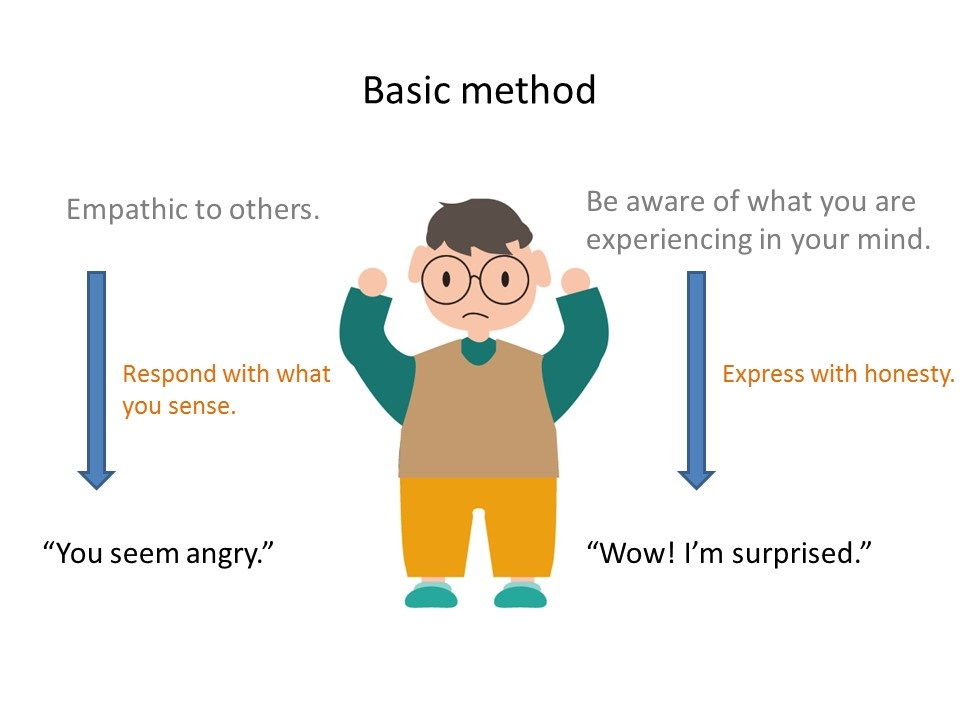

記事
MEG の要領
これは龍陀師に教えていただいた、エンカウンターのための基本的メソッドです。
- 関心の基盤
- 少なくともお互いに関心をもちあって場にのぞみます。そして、慈愛のこころを持つように努めましょう。
- I - 感知
- 自分が今、体験している情緒を感知するようにします。
- I - 表現
- 自分が今、体験している情緒を言葉にして表現するようにします。
- II - 共感
- 話し手が今、体験している情緒に共感するようにします。
- II - 反応
- 話し手の情緒に共感したことを言葉にして表現するようにします。
- 明瞭、簡単、適切
- 話すときは明瞭、簡単、適切に表現することを心がけます。
- 頻度均衡
- 一人ひとりの参画に頻度均衡があるようこころがけます。
- ３秒
- マインドフルネスであるように、「３秒」待って、話し出すようなつもりがいいでしょう。